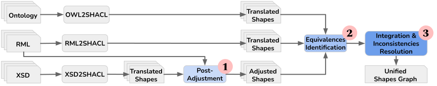

Input: SHACL Shapes (High Priority)
Input: SHACL Shapes (Low Priority)
Output: SHACL Shapes
SCOOP-UI Documentation
SCOOP is a framework that exploits all artifacts associated with the construction of an RDF graph, i.e. data schemas, ontologies, and mapping rules, and integrates the SHACL shapes extracted from each artifact into a unified shapes graph.
SCOOP Framework
SCOOP-UI Features
- Single Rile Input: When a single file is given as input, e.g., a data schema, an ontology or a set of mapping rules, the application automatically triggers the corresponding shapes extraction component to directly generate the corresponding SHACL shapes.
- Multiple Files Inputs: When multiple files are given as input, the application invokes the corresponding shape extraction components to extract the shapes and shape integration module to integrate the extracted shapes.
- Multiple SHACL Shapes Inputs: While SCOOP is designed to accommodate various input resources, this application isolates the integration module of SCOOP to enable the support for integrating multiple inputs of SHACL shapes.
Configurations
- Integration Strategies: Select one from three integration strategies: Keep All Constraints using Logical Constraint sh:or (SCOOP-All), Keep Non-Conflict Constraints Based on Priority (SCOOP-Prior), and Keep Non-Conflict Constraints and Remove Redundant Shapes Based on Priority (SCOOP-Prior-R). The adoption of different strategies influences the resolution of conflicting constraints.
- Integration Priorities: Easily rearrange and prioritize your SHACL shapes integration using simple drag-and-drop functionality.
How to Use
- Input Data: Enter the text box, upload a file, or click on a predefined example.
- Set Configurations: Click the setting icon next to the translate and integrate button.
- Generate Output: Click the translate and integrate button to generate.
Cite
- Duan, X., Chaves-Fraga, D., Derom, O., Dimou, A.: SCOOP all the Constraints’ Flavours for your Knowledge Graph. In: Proceedings of the 21st Extended Semantic Web Conference (ESWC) (2024)
- Duan, X., Chaves-Fraga, D., Dimou, A.: SCOOP-UI: SHACL Shape Extraction in Just a Click!. In: Proceedings of the 21st Extended Semantic Web Conference (ESWC): Posters and Demos (2024)